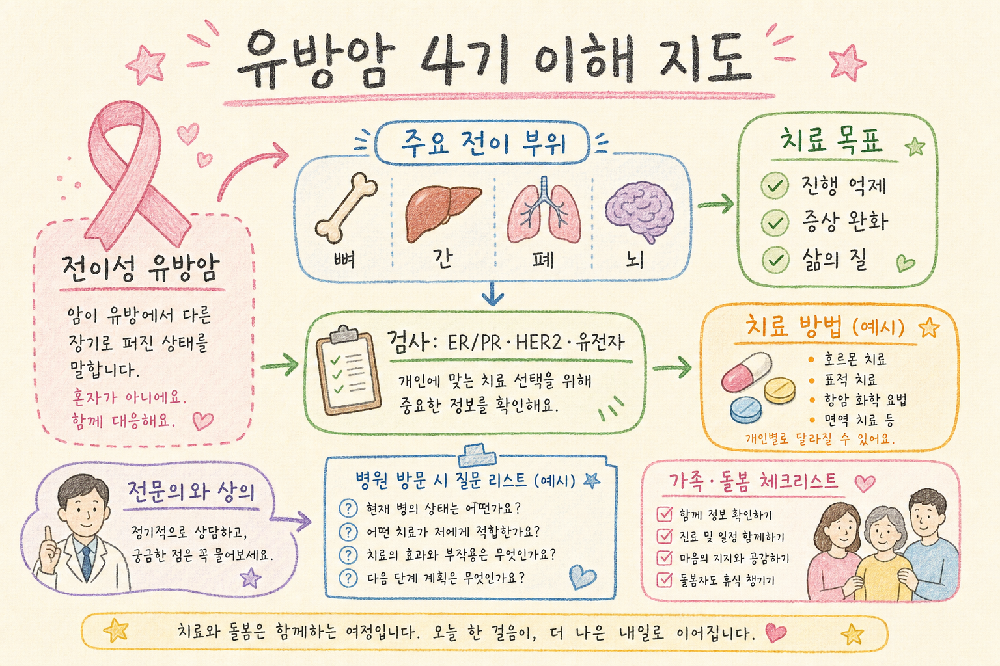

유방암 4기 분석 보고서
문서 성격: 이 보고서는 환자·보호자가 진료 내용을 이해하는 데 도움을 주기 위한 교육용 일반 정보입니다. 개인별 진단, 치료 선택, 예후 판단은 병기, 병리 결과, 전신 상태, 이전 치료, 검사 수치에 따라 크게 달라지므로 반드시 유방암 전문의·종양내과 전문의와 상의해야 합니다.
핵심 요약
- 4기 유방암은 암이 유방·주변 림프절을 넘어 뼈, 간, 폐, 뇌 등 먼 장기로 전이된 상태를 말합니다.
- 치료 목표는 “완치 보장”이 아니라 진행 억제, 생존기간 연장, 증상 완화, 삶의 질 유지에 둡니다.
- 같은 4기라도 ER/PR, HER2, 삼중음성, BRCA·PIK3CA·ESR1 등 검사 결과에 따라 치료 흐름이 크게 다릅니다.
- 최근 치료는 호르몬치료, 표적치료, 항암, 면역항암, PARP 억제제, ADC 등을 순서와 상황에 맞게 조합합니다.
- 인터넷 생존율은 평균값일 뿐입니다. 본인에게 적용하려면 주치의에게 현재 상태와 치료 반응 기준으로 물어봐야 합니다.
보고서모드 인포그래픽

미색 종이 위 색연필·크레용 손그림 학습 노트 스타일
1. 4기/전이성 유방암이란
4기 유방암은 암세포가 처음 생긴 유방 부위와 가까운 림프절 범위를 넘어, 혈액이나 림프 흐름을 통해 먼 장기에 자리 잡은 상태입니다. 의학적으로는 전이성 유방암 metastatic breast cancer 또는 advanced breast cancer로 부릅니다.
중요한 점은 “4기”라는 말이 곧바로 치료가 불가능하다는 뜻은 아니라는 점입니다. 완치를 단정하기는 어렵지만, 병의 진행을 늦추고 증상을 줄이며 오래 안정적으로 지내는 것을 목표로 여러 치료 전략을 사용합니다.
2. 주요 전이 부위
| 전이 부위 | 흔히 확인하는 증상·검사 | 진료에서 볼 점 |
|---|---|---|
| 뼈 | 통증, 골절 위험, 칼슘 상승, 뼈 스캔·PET/CT·MRI | 통증 조절, 방사선치료, 골강화제 사용 여부 |
| 간 | 복부 불편감, 간수치 변화, CT·MRI | 간 기능, 병변 개수와 크기, 전신치료 반응 |
| 폐·흉막 | 기침, 호흡곤란, 흉수, 흉부 CT | 호흡 증상 조절, 흉수 배액 필요 여부 |
| 뇌·중추신경계 | 두통, 어지럼, 마비, 경련, 뇌 MRI | 방사선수술·전뇌방사선·전신치료 선택 |
3. 치료 목표: 현실적이되 포기하지 않는 접근
진행 억제
암이 커지거나 새 전이가 생기는 속도를 늦추는 것이 핵심 목표입니다.
생존기간 연장
치료 반응과 부작용을 보며 가능한 치료 선택지를 순차적으로 사용합니다.
증상 완화
통증, 호흡곤란, 피로, 식욕 저하, 불안 등을 적극적으로 조절합니다.
삶의 질
치료 강도와 일상 유지, 가족 계획, 경제 부담을 함께 고려합니다.
4. 병리·분자 아형 검사: 치료의 출발점
| 검사/표지자 | 뜻 | 치료와의 연결 |
|---|---|---|
| ER/PR | 여성호르몬 수용체 양성 여부 | 양성이면 호르몬치료와 CDK4/6 억제제 조합을 우선 고려하는 경우가 많습니다. |
| HER2 | HER2 단백 과발현·유전자 증폭 여부 | 양성이면 trastuzumab, pertuzumab, T-DXd 등 HER2 표적치료가 핵심입니다. |
| 삼중음성 | ER, PR, HER2가 모두 음성 | 항암치료, PD-L1 등 조건에 따른 면역항암, ADC, BRCA 관련 PARP 억제제 등을 검토합니다. |
| Ki-67 | 암세포 증식 속도를 가늠하는 지표 | 전체 병리 맥락 안에서 공격성 판단에 참고합니다. |
| BRCA1/2 | 유전성 유방암 관련 유전자 변이 | 해당 시 PARP 억제제와 가족 유전 상담 논의가 필요할 수 있습니다. |
| PIK3CA | HR 양성/HER2 음성에서 볼 수 있는 경로 변이 | 조건에 따라 PI3K/AKT 경로 표적치료 논의에 연결됩니다. |
| ESR1 | 호르몬치료 저항성과 관련될 수 있는 변이 | 치료 후 진행 시 내분비치료 선택에 참고될 수 있습니다. |
5. 유형별 치료 큰 흐름
HR 양성 / HER2 음성
증상이 급격하거나 장기 기능이 위협받는 상황이 아니라면, 호르몬치료에 CDK4/6 억제제를 더하는 전략이 널리 사용됩니다. 이후 진행하면 유전자 검사 결과와 이전 약제에 따라 PI3K/AKT/mTOR 경로 약제, SERD 계열, 항암치료, ADC 등을 순차적으로 검토합니다.
HER2 양성
HER2 표적치료가 치료의 중심입니다. trastuzumab·pertuzumab 기반 치료, T-DM1 또는 trastuzumab deruxtecan 같은 ADC, tucatinib 조합 등은 병의 진행 양상과 뇌전이 여부, 이전 치료에 따라 선택됩니다.
삼중음성 유방암
호르몬치료나 전통적 HER2 표적치료가 잘 맞지 않기 때문에 항암치료가 기본 축이 됩니다. PD-L1 양성 등 조건이 맞으면 면역항암 병합을 고려하고, BRCA 변이가 있으면 PARP 억제제, 이후에는 sacituzumab govitecan 같은 ADC도 선택지에 들어갈 수 있습니다.
국소 증상 치료
전신치료가 기본이지만, 뼈 통증이나 골절 위험에는 방사선치료·정형외과적 처치·골강화제, 뇌전이에는 정위방사선수술이나 전뇌방사선, 흉수에는 배액 같은 국소 치료가 함께 필요할 수 있습니다.
6. 예후에 영향을 주는 요인
- 암의 아형: HR 양성, HER2 양성, 삼중음성 여부
- 전이 부위와 개수: 뼈 단독 전이인지, 간·폐·뇌 등 주요 장기 전이가 있는지
- 전신 상태: 체력, 영양, 동반 질환, 장기 기능
- 치료 반응: 첫 치료에 얼마나 오래 안정되는지
- 이전 치료 이력과 약제 내성
- 유전자 변이와 표적치료 가능성
- 증상 조절과 감염·혈전·골절 같은 합병증 관리
7. 병원에서 물어볼 질문 리스트
- 제 병의 정확한 아형은 HR/HER2 기준으로 무엇인가요?
- 전이 부위는 어디이며, 현재 장기 기능을 위협하는 상황인가요?
- 치료 목표는 무엇이고, 첫 치료 반응은 언제 어떻게 평가하나요?
- 제가 받아야 할 유전자 검사는 BRCA, PIK3CA, ESR1, NGS 중 무엇인가요?
- 현재 추천 치료의 기대 효과와 흔한 부작용, 중단 기준은 무엇인가요?
- 뇌 MRI, 뼈 검사, 심장 기능 검사 등 추가 검사가 필요한가요?
- 통증·불면·불안·식욕 저하를 완화할 방법은 무엇인가요?
- 임상시험 참여 가능성이 있나요?
- 치료비와 보험 적용, 산정특례, 지원 제도는 어떻게 확인하나요?
- 응급실에 가야 하는 경고 증상은 무엇인가요?
8. 가족·보호자 체크리스트
- 진료 전: 최근 증상, 통증 위치, 체중 변화, 복용 약, 질문 목록을 정리합니다.
- 진료 중: 검사 결과와 치료 계획을 기록하고, 이해 안 되는 용어는 바로 물어봅니다.
- 집에서: 발열, 호흡곤란, 심한 통증, 의식 변화, 갑작스런 마비, 출혈 등 경고 증상을 확인합니다.
- 생활: 식사·수면·활동량을 무리 없이 유지하고, 환자가 스스로 결정할 권리를 존중합니다.
- 정서: “긍정적으로만 생각해”보다 “무엇이 제일 힘든지 같이 정리해보자”가 도움이 될 때가 많습니다.
- 보호자 자신: 장기 치료에서는 보호자의 번아웃도 흔하므로 교대 돌봄과 상담 자원을 마련합니다.
9. 비판적 관점: 숫자와 선택지를 차분히 보기
인터넷 생존율의 한계: 생존율 통계는 과거 여러 환자 집단의 평균입니다. 최근 표적치료와 ADC, 면역항암 도입으로 치료 환경이 계속 바뀌고 있고, 개인의 아형·전이 부위·치료 반응이 반영되지 않습니다. 통계는 방향을 이해하는 참고자료이지, 개인의 남은 시간을 예언하는 숫자가 아닙니다.
과잉치료와 대체요법 위험: 치료를 많이 한다고 항상 더 좋은 것은 아닙니다. 부작용이 삶의 질을 크게 해치면 치료 강도 조절이 필요할 수 있습니다. 반대로 검증되지 않은 대체요법 때문에 표준치료가 지연되거나 간독성·상호작용이 생기면 위험합니다.
비용·부작용·삶의 질 균형: 4기 치료는 장기전입니다. 약값, 검사비, 이동 부담, 직장·가정 역할, 부작용 관리까지 포함해 현실적인 계획을 세워야 합니다. 완화의료는 “치료 포기”가 아니라 증상과 삶의 질을 전문적으로 관리하는 동반 치료입니다.
10. 신뢰 가능한 공개 출처
- National Cancer Institute: Breast Cancer Treatment PDQ
- NCCN Guidelines for Patients: Metastatic Breast Cancer
- Cancer.Net / ASCO: Metastatic Breast Cancer Treatment Options
- American Cancer Society: Treatment of Stage IV Breast Cancer
- 국가암정보센터
최종 정리
유방암 4기는 무거운 진단이지만, 치료 선택지가 하나로 고정된 병은 아닙니다. 병리 아형과 유전자 검사, 전이 부위, 증상, 환자의 목표를 함께 놓고 치료 순서를 정하는 질환입니다. 환자와 보호자는 “무엇을 해야 하나”보다 먼저 “내 병의 유형이 무엇이고, 지금 치료의 목표가 무엇인지”를 명확히 묻는 것이 좋습니다.
반드시 확인: 이 문서는 일반 교육용 정보이며 의료 조언·진단·처방이 아닙니다. 실제 치료 결정은 검사 결과와 상태를 아는 담당 전문의와 상의해 결정해야 합니다.
Jeremy's Insight by 🤖 딸깍봇 https://blog.naver.com/jeremylee0213